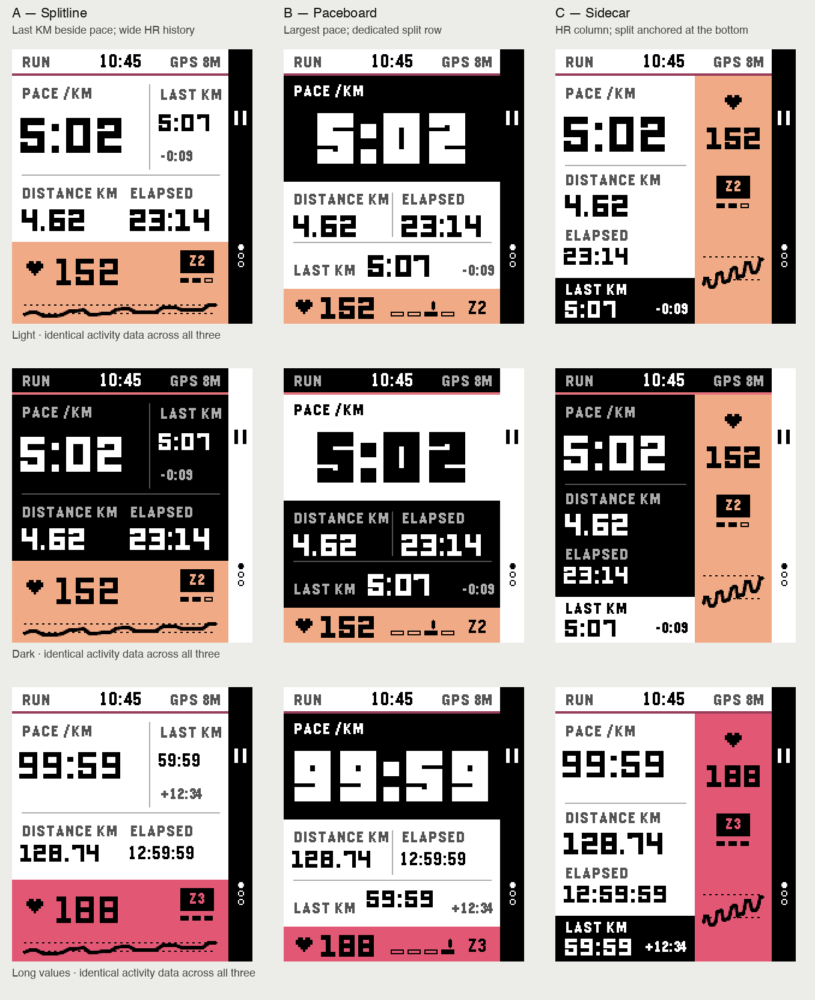
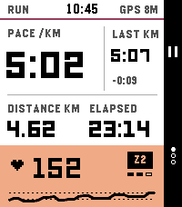
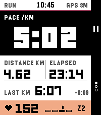
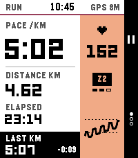
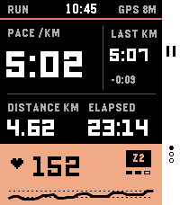
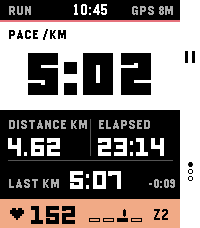
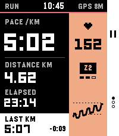
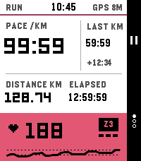
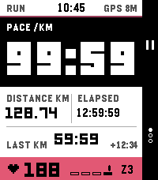
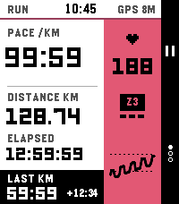

Round 3 · Pace leads. Last KM stays visible. Distance, elapsed and HR each appear once. These are native 200 × 228 PebbleOS font/layout previews, with LCD colour correction and illustrative data.
A — Splitline: Last KM occupies the upper-right pocket beside pace; HR and its history fill the bottom. B — Paceboard: the biggest pace figure, a separate last-split row, and a compact HR scale. C — Sidecar: a continuous HR column on the right, with the last split anchored at the bottom left.

The HR traces are illustrative ten-minute histories. Zone labels and the precise marker complement colour; no decorative kilometre progress or duplicate HR headings are used. These layouts remain separate from the production app.








